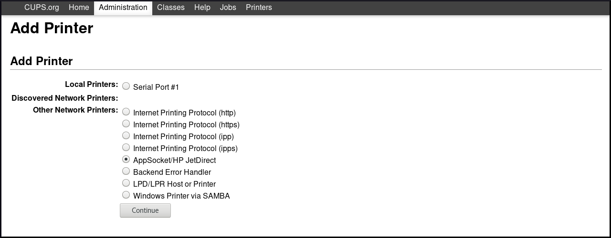
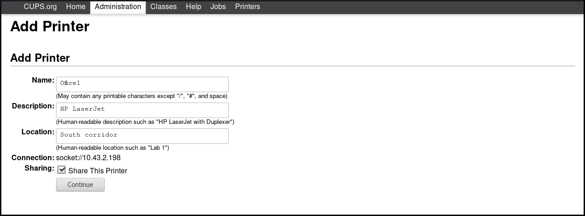
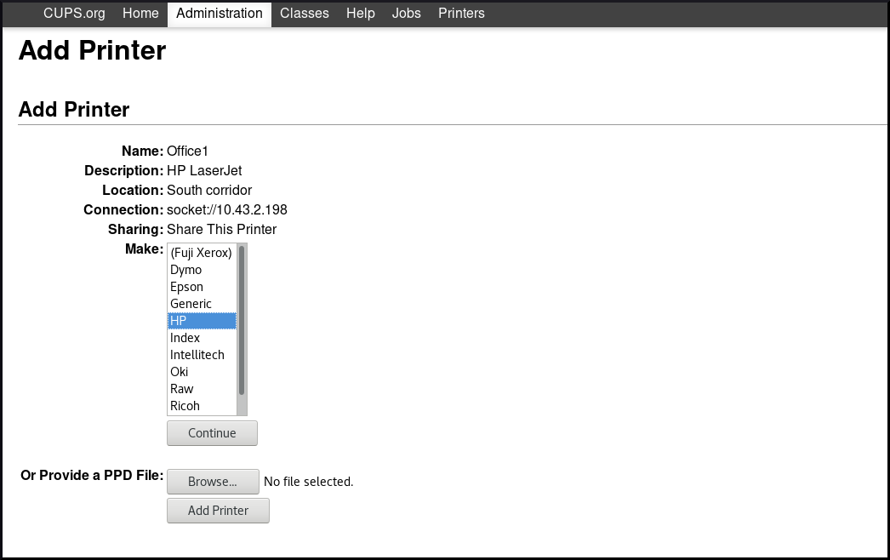
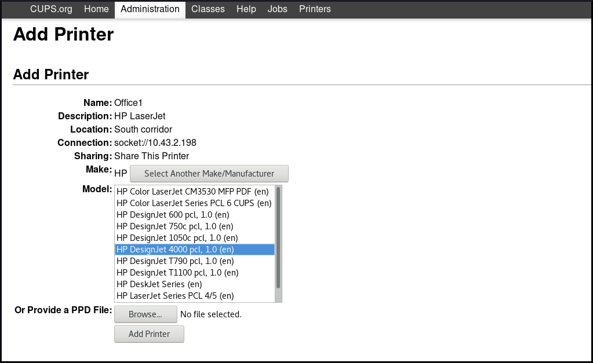
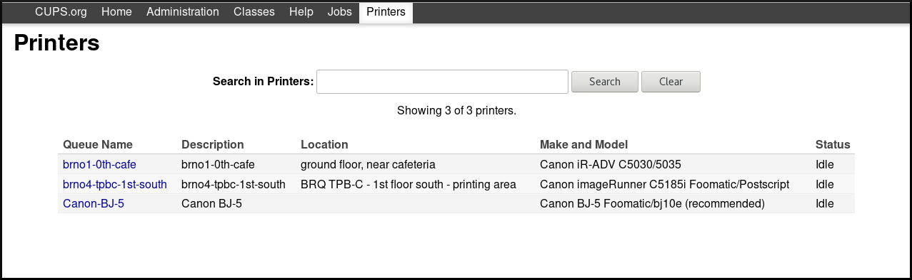
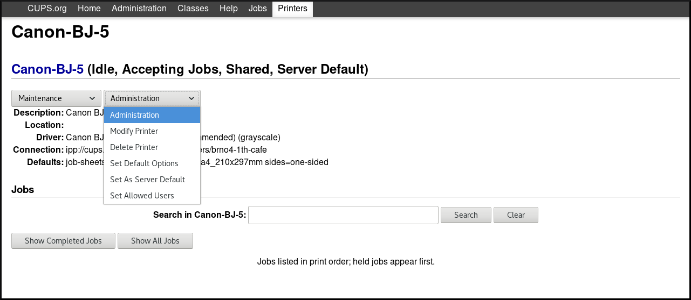
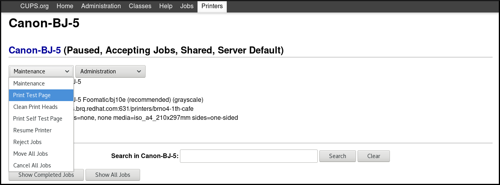
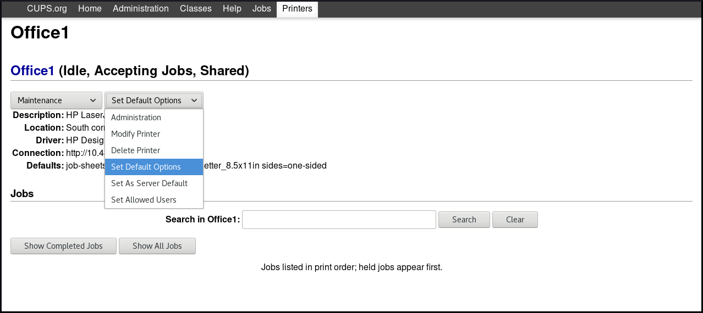

Chapter 9. 配置打印
在Red Hat Enterprise Linux 8上打印基于通用Unix打印系统（CUPS）。
本文档介绍如何将计算机配置为能够作为CUPS服务器运行。
本节介绍如何激活系统上的cups服务。
先决条件
必须在您的系统上安装可在Appstream存储库中使用的
cups包：~]# yum install cups
程序
启动
cups服务：~]# systemctl start cups
将
cups服务配置为在引导时自动启动：~]# systemctl enable cups
（可选）检查
cups服务的状态：~]$ systemctl status cups
要实现与打印相关的各种任务，您可以选择以下工具之一：
- CUPS Web用户界面（UI）
- GNOME控制中心
警告
红帽企业版Linux 7中使用的“ 打印设置”配置工具不再可用。
使用这些工具可以实现的任务包括：
- 添加和配置新打印机
- 维护打印机配置
- 管理打印机类
请注意，本文档仅涵盖CUPS Web用户界面（UI）中的打印。如果要使用GNOME控制中心进行打印，则需要提供GUI。有关使用GNOME控制中心进行打印的详细信息，请参阅从桌面管理RHEL系统 。
本节介绍如何访问CUPS Web UI以及如何配置它以便能够通过此界面管理打印。
要访问CUPS Web UI ：
通过在
/etc/cups/cupsd.conf文件中设置Port 631，允许CUPS服务器侦听来自网络的连接：#Listen localhost:631 Port 631
通过在
/etc/cups/cupsd.conf文件中包含以下内容，允许您的计算机访问CUPS服务器：<Location /> Allow from <your_ip_address> Order allow,deny </Location>
注意
将
<your_ip_address>替换为系统的真实IP地址。重启cups.service：
~]# systemctl restart cups
- 打开浏览器，转到http：// <IP_address_of_the_CUPS_server>：631 / 。

除Administration菜单外，所有菜单现在都可用。
如果单击“ Administration菜单，则会收到“ 禁止”消息：

要获取对“ Administration菜单的访问权限，请按照“获取对CUPS Web UI的管理访问权限”一节中的说明进行操作。
本节介绍如何获取CUPS Web UI的管理访问权限。
程序
要能够访问CUPS Web UI中的
Administation菜单，请在/etc/cups/cupsd.conf文件中包含以下内容：<Location /admin> Allow from <your_ip_address> Order allow,deny </Location>
注意
将
<your_ip_address>替换为系统的真实IP地址。为了能够访问该网页CUPS UI配置文件，包括在以下
/etc/cups/cupsd.conf文件：<Location /admin/conf> AuthType Default Require user @SYSTEM Allow from <your_ip_address> Order allow,deny </Location>
注意
将
<your_ip_address>替换为系统的真实IP地址。为了能够访问该网页CUPS UI日志文件，包括在以下
/etc/cups/cupsd.conf文件：<Location /admin/log> AuthType Default Require user @SYSTEM Allow from <your_ip_address> Order allow,deny </Location>
注意
将
<your_ip_address>替换为系统的真实IP地址。要在CUPS Web UI中为经过身份验证的请求指定加密使用，请在
/etc/cups/cupsd.conf文件中包含DefaultEncryption：DefaultEncryption IfRequested
使用此设置，您将收到一个验证窗口，用于输入在您尝试访问“
Administration菜单时允许添加打印机的用户的用户名。但是，还有其他选项如何设置DefaultEncryption。有关更多详细信息，请参见cupsd.conf手册页。重启
cups服务：~]# systemctl restart cups
警告
如果不重新启动
cups服务，则不会应用/etc/cups/cupsd.conf的更改。因此，您将无法获得对CUPS Web UI的管理访问权限。
其他资源
有关如何使用配置CUPS服务器的详细信息/etc/cups/cupsd.conf文件，看到cupsd.conf手册页。
本节介绍如何使用CUPS Web用户界面添加新打印机。
先决条件
您已获得对CUPS Web UI的管理访问权限，如“获取对CUPS Web UI的管理访问权限”一节中所述 。
程序
- 在所述启动CUPS网络界面 称为“访问和配置CUPS的web用户界面”一节
转到
Adding Printers and Classes-Add printer

通过用户名和密码验证：

重要
要使用CUPS Web UI添加新打印机，您必须作为以下用户之一进行身份验证：
- 超级用户
- 具有
sudo命令提供的管理访问权限的任何用户（/etc/sudoers列出的用户） - 属于
/etc/groupprintadmin组的任何用户
如果连接了本地打印机，或CUPS找到可用的网络打印机，请选择打印机。如果本地打印机和网络打印机都不可用，请从“
Other Network Printers选择一种打印机类型，例如APP Socket / HP Jet direct ，输入打印机的IP地址，然后单击“Continue。如果您已选择例如APP Socket / HP Jet direct，如上所示，请输入打印机的IP地址，然后单击
Continue。
您可以添加有关新打印机的更多详细信息，例如名称，描述和位置。要设置要通过网络
Share This Printer，请使用“Share This Printer，如下所示。选择打印机制造商，然后单击“
Continue。另外，您也可以提供一个PostScript打印机描述（PPD）文件被用作打印机的驱动程序，通过点击
Browse…在底部。选择打印机的型号，然后单击“
Add Printer。添加打印机后，下一个窗口允许您设置默认打印选项。

单击“ Set Default Options ，您将收到已成功添加新打印机的确认。

本节介绍如何配置新打印机，以及如何使用CUPS Web UI维护打印机配置。
先决条件
您已获得对CUPS Web UI的管理访问权限，如“获取对CUPS Web UI的管理访问权限”一节中所述 。
程序
单击“
Printers菜单以查看可以配置的可用打印机。选择一个要配置的打印机。

使用以下可用菜单执行所选任务：
转至
Maintenance以执行维护任务。
转到
Administration以执行管理任务。- 您还可以通过单击“
Show Completed Jobs或“Show All Jobs按钮来检查已完成的打印作业或所有活动的打印作业。
本节介绍如何打印测试页以确保打印机正常运行。
如果满足以下条件之一，您可能需要打印测试页。
- 已经设置了打印机。
- 打印机配置已更改。
先决条件
您已获得对CUPS Web UI的管理访问权限，如“获取对CUPS Web UI的管理访问权限”一节中所述 。
程序
转到“
Printers菜单，然后单击“Maintenance→“Print Test Page。
本节介绍如何在CUPS Web UI中设置常用打印选项，例如介质尺寸和类型，打印质量或颜色模式。
先决条件
您已获得对CUPS Web UI的管理访问权限，如“获取对CUPS Web UI的管理访问权限”一节中所述 。
程序
转到
Administration菜单，然后单击Maintenance→Set Default Options。设置打印选项。
CUPS提供三种不同的日志：
- 错误日志 - 存储错误消息，警告和调试消息。
- 访问日志 - 存储有关访问CUPS客户端和Web UI的次数的消息。
- 页面日志 - 存储有关每个打印作业的总页数的消息。
在Red Hat Enterprise Linux 8中，所有三种类型都与systemd-journald一起集中记录，并与其他程序的日志一起记录。
警告
在Red Hat Enterprise Linux 8中，日志不再存储在/var/log/cups目录中的特定文件中，该目录在Red Hat Enterprise Linux 7中使用。
本节介绍如何访问：
- 所有CUPS日志
- CUPS记录特定的打印作业
- CUPS在特定时间范围内记录
本节介绍如何配置CUPS日志的位置。
在Red Hat Enterprise Linux的8，CUPS日志默认登录到systemd-journald，这是由以下默认设置确保/etc/cups/cups-files.conf文件：
ErrorLog syslog
重要
Red Hat建议保留CUPS日志的默认位置。
如果要将日志发送到其他位置，则需要更改/etc/cups/cups-files.conf文件中的设置，如下所示：
ErrorLog <your_required_location>
警告
如果更改CUPS日志的默认位置，则可能会遇到意外行为或SELinux问题。
上下文：配置打印
context：部署不同类型的服务器